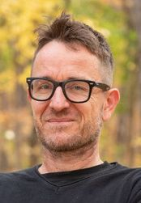
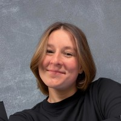
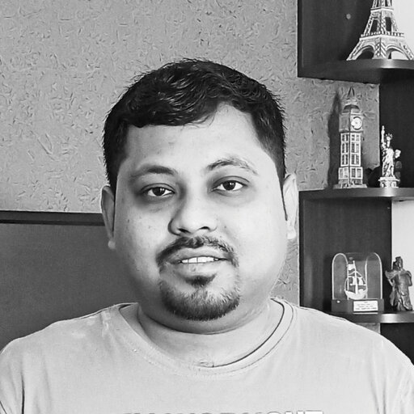
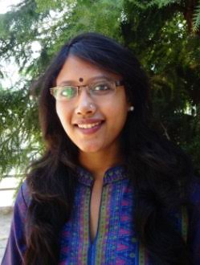
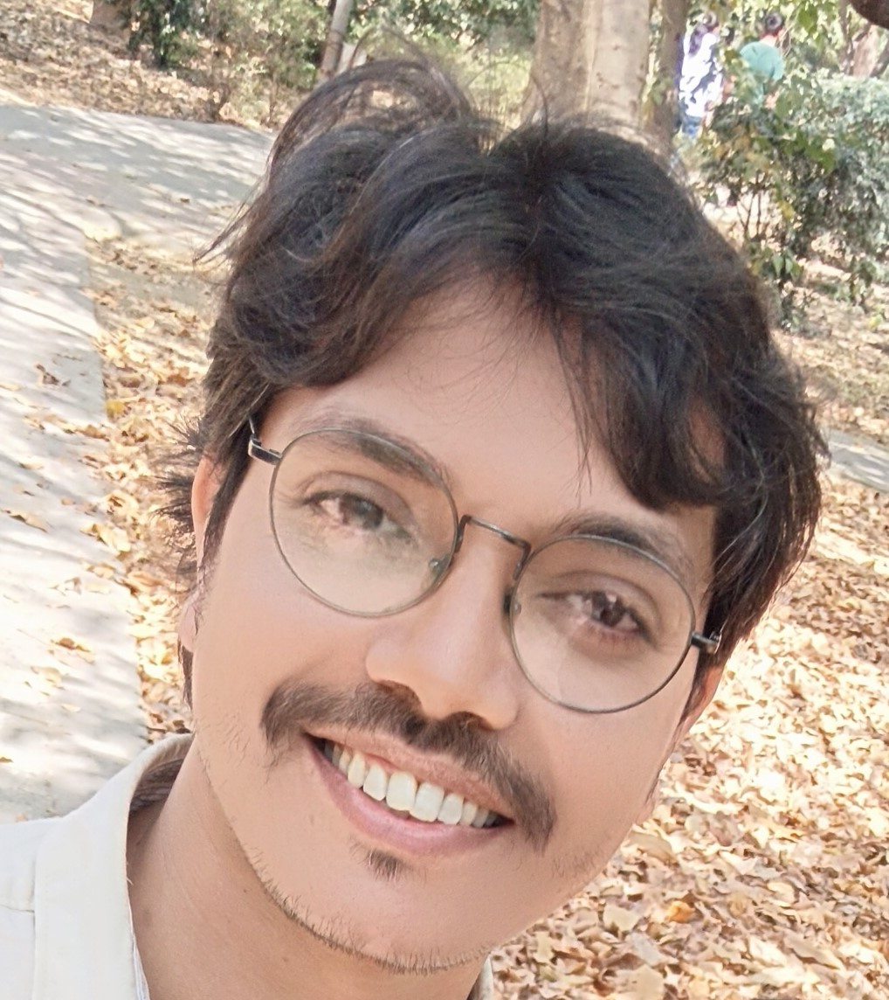

01
◉
Earth Observation
Use satellite, airborne and ground-based observations to characterize ecosystem state and change across scales.
AWB · VIDYASAGAR UNIVERSITY · UNIVERSITÉ DE MONTRÉAL
An interdisciplinary capacity-building program for the Lower Gangetic Plain.
This training-cum-workshop brings together Earth observation, artificial intelligence, terrestrial biosphere modelling and micrometeorology in one integrated learning experience.
A collaboration between the Department of Geography at Vidyasagar University and Université de Montréal, supported by Academics Without Borders, the programme combines an online lecture series in November 2026 with two weeks of intensive, hands-on training in December.
The Lower Gangetic Plain faces rising temperatures, shifting monsoons, cyclones, floods, heatwaves, forest fires and erosion. These pressures are reshaping ecosystem functions that sustain millions of people.
Develop a working toolkit that links observation, data intelligence, modelling and field measurement.
Use satellite, airborne and ground-based observations to characterize ecosystem state and change across scales.
Extract meaningful patterns from heterogeneous environmental and climate datasets using modern computational approaches.
Explore process-based terrestrial models to project ecosystem responses to climate forcing and management decisions.
Gain hands-on experience measuring surface–atmosphere exchanges of carbon, water and energy.
FROM THEORY TO THE FIELD
A typical eddy covariance system captures high-frequency CO₂ and H₂O fluxes, enabling researchers to investigate how vegetation responds to changing meteorological, atmospheric, soil and hydrological conditions.
Participants will receive hands-on training in sub-humid degraded forest landscapes of western Gangetic West Bengal.

Atmospheric biogeosciences, ecosystem–atmosphere interactions, micrometeorology and climate change.

Greenhouse gas fluxes, eddy covariance, permafrost ecosystems and environmental monitoring.

Micrometeorology, atmospheric turbulence, ecosystem exchanges, remote sensing and climate analytics.
Landscape ecology, ecosystem services, geospatial technologies and sustainability.

Remote sensing, GIS, Earth observation, hazards and sustainable environmental management.

Aerosol climatology, land–atmosphere interactions, Earth system science and machine learning.
The training progresses from participant selection and online preparation to intensive in-person instruction, field practice and post-course follow-up.
Selection of a cohort of 30 students, including early-career researchers and professionals.
A pre-course knowledge survey is administered to selected participants.
Five live two-hour sessions, recorded for participants, delivered approximately once per week.
Expert travel from Montréal to Kolkata and onward to Midnapore.
Lectures, data laboratories and hands-on instrumentation, followed by mid-point feedback on Friday.
Advanced laboratories, capstone project work, end-of-course symposium and assessments.
Return travel from India to Canada.
Post-course assessments, capstone follow-up, archiving of materials on StudiUM and the VU repository, and AWB final reporting.
Department of Geography
Vidyasagar University
Midnapore, West Bengal, India — 721102
JOIN THE INAUGURAL COHORT
Applications are being accepted through the official registration form. Use the button below to open the form directly.
Accommodation: Accommodation charges inside the campus are separate at INR 400/- per day.
The registration form opens directly in a new browser tab.
This is equivalent to a faculty development course. Early-career professionals will receive a certificate of completion after completing this hybrid-mode workshop.